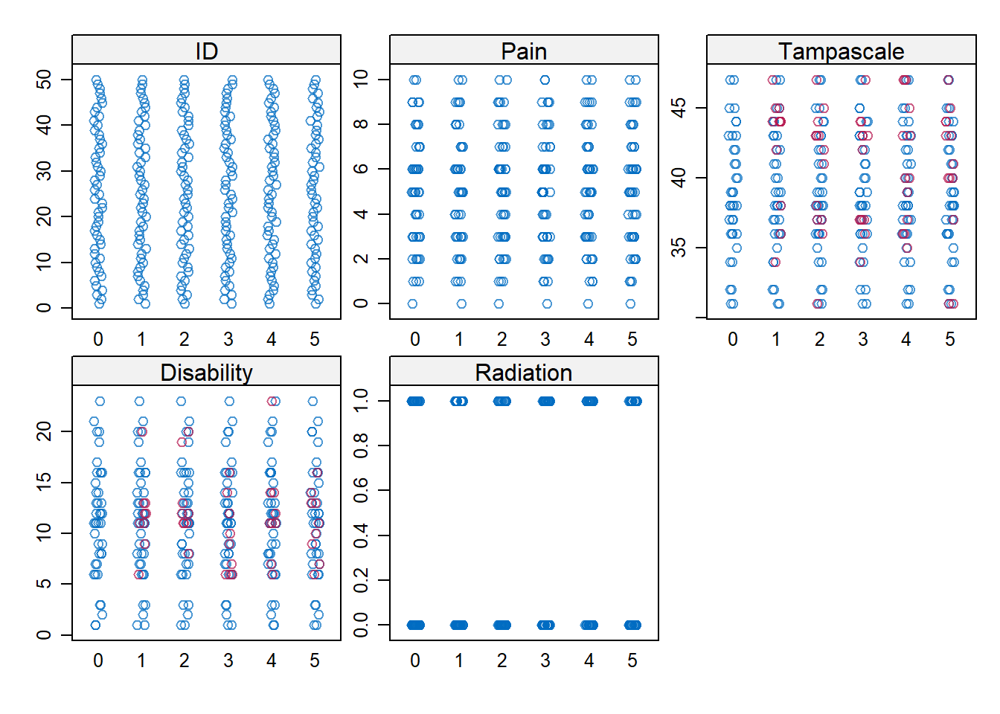

Chapter 4 Multiple Imputation
In this Chapter we discuss an advanced missing data handling method, that is called Multiple Imputation (MI). With MI, each missing value is replaced by several different values and consequently several different completed datasets are generated. The concept of MI can be made clear by the following figure 4.1.

Figure 4.1: Graphical presentation of the MI procedure.
In the first step, the dataset with missing values (i.e. the incomplete dataset) is copied several times. Then in the next step, the missing values are replaced with imputed values in each copy of the dataset. In each copy, slightly different values are imputed due to random variation. This results in mulitple imputed datasets. In the third step, the imputed datasets are each analyzed and the study results are then pooled into the final study result. In this Chapter, the first phase in multiple imputation, the imputation step, is the main topic. In the next Chapter, the analysis and pooling phases are discussed.
There are many different algorithms developed to impute missing values with a multiple imptuation procedure. For example multivariate imputation, where all variables are imputed in one iteration under the multivariate normal assumption, or multivariate imputation by chained equations, where variables are imputed sequentially. The latter method will be explained more thorougly in the next paragraph.
4.1 Multivariate Imputation by Chained Equations
Multivariate imputation by chained equations (MICE) is also known as Sequential Regression Imputation, Fully Conditional Specification or Gibbs sampling. In the MICE algorithm, a chain of regression equations is used to obtain imputations, which means that variables with missing data are imputed one by one. The regression models use information from all other variables in the model, i.e. conditional imputation models. In order to add sampling variability to the imputations, residual error is added to create the imputed values. This residual error can either be added to the prediced values directly, which is esentially similar to repeating stochastic regression imputation over several imputation runs. Or, the residual variance can be added via the parameter estimates of the regression model, which is a Bayesian sampling method. The Bayesian method is the default in the mice package in R.
4.1.1 The mice algorithm and iteration steps
Each imputed dataset is generated after several iterations of the imputation algorithm. The imputation algorithm includes the chain of regression equations to estimate the imputed values. How this works exactly is explained with the LBP data as an illustration. In this data we have missing values in the Tampa scale variable and the disability variable; the other two variables, radiation and pain, are completely observed.
Per imputed dataset we start with iteration number 0. Data points are randomly drawn from the observed values of the Tampa scale and the Disability variable and these are used to replace the missing values in these variables.
For iteration 1 the Tampa scale values are set back to missing. Subsequently, a linear regression model is applied in the available data (i.e. all subjects with observed Tampa scale values) using the Tampa scale as the dependent variable and Pain, Disability and Radiation as independent variables. Note that for this regression the imputed values for disability from the previous iteration are used. The Baysian sampling method then draws regression coefficients from the posterior distribution of the parameters of this regression. The imputed values for Tampa scale are the predicted values from the linear regression. This regression equation is defined as:
\(Tampa_{mis} = \beta_0 + \beta_1Pain + \beta_2Disability + \beta_3Radiation\)
where \(\beta_0\), \(\beta_1\), \(\beta_2\) and \(\beta_3\) are Bayseian sampling draws from their posterior distributions. The same procedure is repeated for the Disability variable. The Disability scores are first set back to missing, then the regression coefficients for the Pain, Tampa scale and Radiation variables are obtained from the subjects without missing diability values. Note that the imputed values for Tampa scale are used. The imputed values for disability are estimated using the regression coefficients with additional random error drawn from the residual error distribution.
\(Disability_{mis} = \beta_0 + \beta_1Pain + \beta_2Tampa + \beta_3Radiation\)
For iteration 2 the Tampa scale values are again set back to missing and (new) updated regression coefficients for Pain, Disability and Radiation are obtained, using the imputed values for Disability from iteration 1. Accordingly, missing values are estimated from regression model where the coefficients are again drawn from the posterior distributions of the estimated parameters. The same holds for the Disability variable. The imputed values for disability are estimated by the regression model using the imputed values in Tampa scale from iteration 2. This process is repeated in each following iteration until the final iteration where the imputed values are used for the first imputed dataset. For the next imputed dataset, the entire process of iterations is repeated.
4.2 Multiple Imputation in R
In R multiple imputation can be performed with the mice function from the mice package. The following default settings are used in the mice function to start MI, m=5, to generate 5 imputed datasets, maxit=10, to use 10 iterations for each imputed dataset (i.e. 10 chains of regression imputation models), method=”pmm”. For an elobate explanation of all options withing the mice function, see ?mice.
library(mice)
library(foreign)
data <- read.spss(file="Backpain50 MI missing.sav", to.data.frame=T)[, -1]## re-encoding from UTF-8imp <- mice(data, m=5, maxit=10, method="pmm")##
## iter imp variable
## 1 1 Tampascale Disability
## 1 2 Tampascale Disability
## 1 3 Tampascale Disability
## 1 4 Tampascale Disability
## 1 5 Tampascale Disability
## 2 1 Tampascale Disability
## 2 2 Tampascale Disability
## 2 3 Tampascale Disability
## 2 4 Tampascale Disability
## 2 5 Tampascale Disability
## 3 1 Tampascale Disability
## 3 2 Tampascale Disability
## 3 3 Tampascale Disability
## 3 4 Tampascale Disability
## 3 5 Tampascale Disability
## 4 1 Tampascale Disability
## 4 2 Tampascale Disability
## 4 3 Tampascale Disability
## 4 4 Tampascale Disability
## 4 5 Tampascale Disability
## 5 1 Tampascale Disability
## 5 2 Tampascale Disability
## 5 3 Tampascale Disability
## 5 4 Tampascale Disability
## 5 5 Tampascale Disability
## 6 1 Tampascale Disability
## 6 2 Tampascale Disability
## 6 3 Tampascale Disability
## 6 4 Tampascale Disability
## 6 5 Tampascale Disability
## 7 1 Tampascale Disability
## 7 2 Tampascale Disability
## 7 3 Tampascale Disability
## 7 4 Tampascale Disability
## 7 5 Tampascale Disability
## 8 1 Tampascale Disability
## 8 2 Tampascale Disability
## 8 3 Tampascale Disability
## 8 4 Tampascale Disability
## 8 5 Tampascale Disability
## 9 1 Tampascale Disability
## 9 2 Tampascale Disability
## 9 3 Tampascale Disability
## 9 4 Tampascale Disability
## 9 5 Tampascale Disability
## 10 1 Tampascale Disability
## 10 2 Tampascale Disability
## 10 3 Tampascale Disability
## 10 4 Tampascale Disability
## 10 5 Tampascale DisabilityBy default, the mice fucntion returns information about the iteration and imputation steps for the variable that are imputed under the columns named “iter”, “imp” and “variable”. This information can be turned off by setting the mice function parameter printFlag = FALSE, which results in silent computation of the missing values. A summary of the imputation results can be obtained by calling the imp object.
imp## Class: mids
## Number of multiple imputations: 5
## Imputation methods:
## Pain Tampascale Disability Radiation
## "" "pmm" "pmm" ""
## PredictorMatrix:
## Pain Tampascale Disability Radiation
## Pain 0 1 1 1
## Tampascale 1 0 1 1
## Disability 1 1 0 1
## Radiation 1 1 1 0This object contains information about the algorithm, the number of imputed datasets, the missing values in each variable, the imputation method, the VisitSequence which is the order in which the variables are imputed during the imputation process, information of the PredictorMatrix and the seed value for the random number generator. The imputed datasets can be extracted by using the complete function. The setting action = 1 returns the first imputed dataset. The settings action = ”long” and include = TRUE returns a data.frame where the imputed datasets are stacked under each other and include the original dataset (with missings) on top (see ?complete for more possibilities how to store the imputed datasets).
complete(imp, action = 1)## Pain Tampascale Disability Radiation
## 1 9 45 20 1
## 2 6 40 10 0
## 3 1 36 1 0
## 4 5 38 17 0
## 5 6 44 14 1
## 6 7 43 11 1
## 7 8 43 8 0
## 8 6 43 11 1
## 9 2 36 11 1
## 10 4 36 8 0
## 11 5 38 16 1
## 12 9 47 14 0
## 13 0 32 3 1
## 14 6 44 12 0
## 15 3 34 13 0
## 16 6 42 14 1
## 17 3 35 11 0
## 18 1 31 1 0
## 19 2 31 7 0
## 20 4 32 9 1
## 21 5 38 13 0
## 22 5 39 12 0
## 23 4 34 8 1
## 24 8 47 13 1
## 25 5 37 6 0
## 26 5 38 16 1
## 27 9 47 23 1
## 28 3 36 6 1
## 29 2 36 9 0
## 30 6 37 16 0
## 31 10 45 21 1
## 32 4 37 8 0
## 33 10 42 20 1
## 34 2 37 3 0
## 35 6 44 12 1
## 36 3 38 7 1
## 37 8 41 8 0
## 38 3 38 6 1
## 39 3 39 11 0
## 40 7 44 15 0
## 41 7 45 16 0
## 42 6 40 12 1
## 43 7 40 16 1
## 44 1 31 2 0
## 45 9 41 8 0
## 46 5 41 17 0
## 47 6 43 11 0
## 48 3 39 6 0
## 49 2 31 6 1
## 50 8 43 19 0complete(imp, action = "long", include = TRUE)## .imp .id Pain Tampascale Disability Radiation
## 1 0 1 9 45 20 1
## 2 0 2 6 NA 10 0
## 3 0 3 1 36 1 0
## 4 0 4 5 38 NA 0
## 5 0 5 6 44 14 1
## 6 0 6 7 NA 11 1
## 7 0 7 8 43 NA 0
## 8 0 8 6 43 11 1
## 9 0 9 2 NA 11 1
## 10 0 10 4 36 NA 0
## 11 0 11 5 38 16 1
## 12 0 12 9 47 14 0
## 13 0 13 0 32 3 1
## 14 0 14 6 NA 12 0
## 15 0 15 3 34 13 0
## 16 0 16 6 42 NA 1
## 17 0 17 3 35 11 0
## 18 0 18 1 31 1 0
## 19 0 19 2 31 7 0
## 20 0 20 4 32 9 1
## 21 0 21 5 NA 13 0
## 22 0 22 5 39 12 0
## 23 0 23 4 34 8 1
## 24 0 24 8 47 13 1
## 25 0 25 5 NA 6 0
## 26 0 26 5 38 16 1
## 27 0 27 9 NA 23 1
## 28 0 28 3 36 NA 1
## 29 0 29 2 36 9 0
## 30 0 30 6 37 16 0
## 31 0 31 10 NA 21 1
## 32 0 32 4 37 8 0
## 33 0 33 10 42 20 1
## 34 0 34 2 37 3 0
## 35 0 35 6 NA 12 1
## 36 0 36 3 38 7 1
## 37 0 37 8 NA 8 0
## 38 0 38 3 38 6 1
## 39 0 39 3 39 NA 0
## 40 0 40 7 44 15 0
## 41 0 41 7 45 NA 0
## 42 0 42 6 40 12 1
## 43 0 43 7 40 16 1
## 44 0 44 1 NA 2 0
## 45 0 45 9 41 NA 0
## 46 0 46 5 41 17 0
## 47 0 47 6 43 11 0
## 48 0 48 3 39 NA 0
## 49 0 49 2 NA 6 1
## 50 0 50 8 NA 19 0
## 51 1 1 9 45 20 1
## 52 1 2 6 40 10 0
## 53 1 3 1 36 1 0
## 54 1 4 5 38 17 0
## 55 1 5 6 44 14 1
## 56 1 6 7 43 11 1
## 57 1 7 8 43 8 0
## 58 1 8 6 43 11 1
## 59 1 9 2 36 11 1
## 60 1 10 4 36 8 0
## 61 1 11 5 38 16 1
## 62 1 12 9 47 14 0
## 63 1 13 0 32 3 1
## 64 1 14 6 44 12 0
## 65 1 15 3 34 13 0
## 66 1 16 6 42 14 1
## 67 1 17 3 35 11 0
## 68 1 18 1 31 1 0
## 69 1 19 2 31 7 0
## 70 1 20 4 32 9 1
## 71 1 21 5 38 13 0
## 72 1 22 5 39 12 0
## 73 1 23 4 34 8 1
## 74 1 24 8 47 13 1
## 75 1 25 5 37 6 0
## 76 1 26 5 38 16 1
## 77 1 27 9 47 23 1
## 78 1 28 3 36 6 1
## 79 1 29 2 36 9 0
## 80 1 30 6 37 16 0
## 81 1 31 10 45 21 1
## 82 1 32 4 37 8 0
## 83 1 33 10 42 20 1
## 84 1 34 2 37 3 0
## 85 1 35 6 44 12 1
## 86 1 36 3 38 7 1
## 87 1 37 8 41 8 0
## 88 1 38 3 38 6 1
## 89 1 39 3 39 11 0
## 90 1 40 7 44 15 0
## 91 1 41 7 45 16 0
## 92 1 42 6 40 12 1
## 93 1 43 7 40 16 1
## 94 1 44 1 31 2 0
## 95 1 45 9 41 8 0
## 96 1 46 5 41 17 0
## 97 1 47 6 43 11 0
## 98 1 48 3 39 6 0
## 99 1 49 2 31 6 1
## 100 1 50 8 43 19 0
## 101 2 1 9 45 20 1
## 102 2 2 6 44 10 0
## 103 2 3 1 36 1 0
## 104 2 4 5 38 17 0
## 105 2 5 6 44 14 1
## 106 2 6 7 45 11 1
## 107 2 7 8 43 14 0
## 108 2 8 6 43 11 1
## 109 2 9 2 31 11 1
## 110 2 10 4 36 13 0
## 111 2 11 5 38 16 1
## 112 2 12 9 47 14 0
## 113 2 13 0 32 3 1
## 114 2 14 6 39 12 0
## 115 2 15 3 34 13 0
## 116 2 16 6 42 13 1
## 117 2 17 3 35 11 0
## 118 2 18 1 31 1 0
## 119 2 19 2 31 7 0
## 120 2 20 4 32 9 1
## 121 2 21 5 38 13 0
## 122 2 22 5 39 12 0
## 123 2 23 4 34 8 1
## 124 2 24 8 47 13 1
## 125 2 25 5 38 6 0
## 126 2 26 5 38 16 1
## 127 2 27 9 45 23 1
## 128 2 28 3 36 6 1
## 129 2 29 2 36 9 0
## 130 2 30 6 37 16 0
## 131 2 31 10 45 21 1
## 132 2 32 4 37 8 0
## 133 2 33 10 42 20 1
## 134 2 34 2 37 3 0
## 135 2 35 6 43 12 1
## 136 2 36 3 38 7 1
## 137 2 37 8 43 8 0
## 138 2 38 3 38 6 1
## 139 2 39 3 39 7 0
## 140 2 40 7 44 15 0
## 141 2 41 7 45 15 0
## 142 2 42 6 40 12 1
## 143 2 43 7 40 16 1
## 144 2 44 1 36 2 0
## 145 2 45 9 41 20 0
## 146 2 46 5 41 17 0
## 147 2 47 6 43 11 0
## 148 2 48 3 39 6 0
## 149 2 49 2 35 6 1
## 150 2 50 8 40 19 0
## 151 3 1 9 45 20 1
## 152 3 2 6 40 10 0
## 153 3 3 1 36 1 0
## 154 3 4 5 38 6 0
## 155 3 5 6 44 14 1
## 156 3 6 7 43 11 1
## 157 3 7 8 43 19 0
## 158 3 8 6 43 11 1
## 159 3 9 2 36 11 1
## 160 3 10 4 36 11 0
## 161 3 11 5 38 16 1
## 162 3 12 9 47 14 0
## 163 3 13 0 32 3 1
## 164 3 14 6 43 12 0
## 165 3 15 3 34 13 0
## 166 3 16 6 42 15 1
## 167 3 17 3 35 11 0
## 168 3 18 1 31 1 0
## 169 3 19 2 31 7 0
## 170 3 20 4 32 9 1
## 171 3 21 5 41 13 0
## 172 3 22 5 39 12 0
## 173 3 23 4 34 8 1
## 174 3 24 8 47 13 1
## 175 3 25 5 38 6 0
## 176 3 26 5 38 16 1
## 177 3 27 9 45 23 1
## 178 3 28 3 36 11 1
## 179 3 29 2 36 9 0
## 180 3 30 6 37 16 0
## 181 3 31 10 41 21 1
## 182 3 32 4 37 8 0
## 183 3 33 10 42 20 1
## 184 3 34 2 37 3 0
## 185 3 35 6 38 12 1
## 186 3 36 3 38 7 1
## 187 3 37 8 43 8 0
## 188 3 38 3 38 6 1
## 189 3 39 3 39 9 0
## 190 3 40 7 44 15 0
## 191 3 41 7 45 16 0
## 192 3 42 6 40 12 1
## 193 3 43 7 40 16 1
## 194 3 44 1 31 2 0
## 195 3 45 9 41 19 0
## 196 3 46 5 41 17 0
## 197 3 47 6 43 11 0
## 198 3 48 3 39 7 0
## 199 3 49 2 31 6 1
## 200 3 50 8 40 19 0
## 201 4 1 9 45 20 1
## 202 4 2 6 42 10 0
## 203 4 3 1 36 1 0
## 204 4 4 5 38 8 0
## 205 4 5 6 44 14 1
## 206 4 6 7 45 11 1
## 207 4 7 8 43 19 0
## 208 4 8 6 43 11 1
## 209 4 9 2 31 11 1
## 210 4 10 4 36 12 0
## 211 4 11 5 38 16 1
## 212 4 12 9 47 14 0
## 213 4 13 0 32 3 1
## 214 4 14 6 37 12 0
## 215 4 15 3 34 13 0
## 216 4 16 6 42 6 1
## 217 4 17 3 35 11 0
## 218 4 18 1 31 1 0
## 219 4 19 2 31 7 0
## 220 4 20 4 32 9 1
## 221 4 21 5 41 13 0
## 222 4 22 5 39 12 0
## 223 4 23 4 34 8 1
## 224 4 24 8 47 13 1
## 225 4 25 5 39 6 0
## 226 4 26 5 38 16 1
## 227 4 27 9 45 23 1
## 228 4 28 3 36 13 1
## 229 4 29 2 36 9 0
## 230 4 30 6 37 16 0
## 231 4 31 10 45 21 1
## 232 4 32 4 37 8 0
## 233 4 33 10 42 20 1
## 234 4 34 2 37 3 0
## 235 4 35 6 42 12 1
## 236 4 36 3 38 7 1
## 237 4 37 8 41 8 0
## 238 4 38 3 38 6 1
## 239 4 39 3 39 9 0
## 240 4 40 7 44 15 0
## 241 4 41 7 45 16 0
## 242 4 42 6 40 12 1
## 243 4 43 7 40 16 1
## 244 4 44 1 32 2 0
## 245 4 45 9 41 21 0
## 246 4 46 5 41 17 0
## 247 4 47 6 43 11 0
## 248 4 48 3 39 9 0
## 249 4 49 2 31 6 1
## 250 4 50 8 45 19 0
## 251 5 1 9 45 20 1
## 252 5 2 6 40 10 0
## 253 5 3 1 36 1 0
## 254 5 4 5 38 8 0
## 255 5 5 6 44 14 1
## 256 5 6 7 47 11 1
## 257 5 7 8 43 19 0
## 258 5 8 6 43 11 1
## 259 5 9 2 31 11 1
## 260 5 10 4 36 13 0
## 261 5 11 5 38 16 1
## 262 5 12 9 47 14 0
## 263 5 13 0 32 3 1
## 264 5 14 6 44 12 0
## 265 5 15 3 34 13 0
## 266 5 16 6 42 10 1
## 267 5 17 3 35 11 0
## 268 5 18 1 31 1 0
## 269 5 19 2 31 7 0
## 270 5 20 4 32 9 1
## 271 5 21 5 42 13 0
## 272 5 22 5 39 12 0
## 273 5 23 4 34 8 1
## 274 5 24 8 47 13 1
## 275 5 25 5 43 6 0
## 276 5 26 5 38 16 1
## 277 5 27 9 44 23 1
## 278 5 28 3 36 11 1
## 279 5 29 2 36 9 0
## 280 5 30 6 37 16 0
## 281 5 31 10 47 21 1
## 282 5 32 4 37 8 0
## 283 5 33 10 42 20 1
## 284 5 34 2 37 3 0
## 285 5 35 6 44 12 1
## 286 5 36 3 38 7 1
## 287 5 37 8 45 8 0
## 288 5 38 3 38 6 1
## 289 5 39 3 39 6 0
## 290 5 40 7 44 15 0
## 291 5 41 7 45 10 0
## 292 5 42 6 40 12 1
## 293 5 43 7 40 16 1
## 294 5 44 1 39 2 0
## 295 5 45 9 41 23 0
## 296 5 46 5 41 17 0
## 297 5 47 6 43 11 0
## 298 5 48 3 39 7 0
## 299 5 49 2 34 6 1
## 300 5 50 8 45 19 0In the imputed datasets two variables are added, an .id variable and an .imp variable to distinguish the cases in the dataset and the imputed datasets. The imputed datasets can be further used in mice to conduct pooled analyses or to store them for further use in other software packages as SPSS.
4.2.1 Customizing the Imputation model
In the exemplar imputation model, the variables Tampa scale and Disability are imputed with the help of variables Pain and Radiation. The latter two variables are called auxiliary variables when they are not part of the main analysis model but they help to impute the Tampa scale and disability variables. Variables that are used to impute other variables can be switched off and on in the predictormatrix.
imp$PredictorMatrix## NULLThe predictor matrix is a matrix with the names of the variables in the dataset listed in the rows and the columns. The variables in the columns are used to impute the row variables. Accordingly, variables in the columns can be switched on or off to in- or exclude them from the imputation model to impute the missing data in the row variable. In our example, the first and fourth rows contain only zeroes, because the Pain and Radiation variables do not have missing values and therefore do not need to be imputed. The variable in the second row, i.e. Tampa scale, contains missing values and the 1´s in this row mean that the column variables Pain, Disability and Radiation are included in the imputation model. For the Disability variable, the variables Pain, Tampa scale and Radiation are used. As a default setting all variables are included in the imputation model to predict missing values in other variables. The diagonal of the predictormatrix is always zero. The predictormatrix can be adapted when for example a variable that contains a high percentage of missing data should be excluded from the imputation model to impute other variables. For example, if we want to exclude the variable Disability from the imputation model of the Tampa scale variable we can do the following:
pred <-imp$PredictorMatrix
pred["Tampascale", "Disability"] <- 0
pred
imp2 <- mice(data,m=5, maxit=10, method="pmm", predictorMatrix = pred, seed=1050)In literature several guidelines for the imputation model are described (Collins, Schafer, and Kam (2001), Van Buuren (2018), D. B. Rubin (1976)). A summary of guidelines for building the imputation model is as follows:
- Include all variables that are part of the analysis model, including the dependent (outcome) variable.
- Include the variables at the same way in the imputation model as they appear in the analysis model (i.e. if interaction terms are in the analysis model they also have to be included in the imputation model).
- Include additional (auxiliary) variables that are related to missingness or to variables with missing values.
4.3 Output of the mice function
The mice function returns a mids (multiple imputed data set) object. In this object, aimputation information is stored and can be extracted by typing imp$, followed by the type of information you want to obtain.
imp$m## [1] 5imp$nmis## Pain Tampascale Disability Radiation
## 0 13 9 0imp$seed## [1] NAimp$iteration## [1] 10The above objects contain the the number of imputed datasets, missing values in each variable, the specified seed value and the number of iterations. The original data can be found in:
imp$data## Pain Tampascale Disability Radiation
## 1 9 45 20 1
## 2 6 NA 10 0
## 3 1 36 1 0
## 4 5 38 NA 0
## 5 6 44 14 1
## 6 7 NA 11 1
## 7 8 43 NA 0
## 8 6 43 11 1
## 9 2 NA 11 1
## 10 4 36 NA 0
## 11 5 38 16 1
## 12 9 47 14 0
## 13 0 32 3 1
## 14 6 NA 12 0
## 15 3 34 13 0
## 16 6 42 NA 1
## 17 3 35 11 0
## 18 1 31 1 0
## 19 2 31 7 0
## 20 4 32 9 1
## 21 5 NA 13 0
## 22 5 39 12 0
## 23 4 34 8 1
## 24 8 47 13 1
## 25 5 NA 6 0
## 26 5 38 16 1
## 27 9 NA 23 1
## 28 3 36 NA 1
## 29 2 36 9 0
## 30 6 37 16 0
## 31 10 NA 21 1
## 32 4 37 8 0
## 33 10 42 20 1
## 34 2 37 3 0
## 35 6 NA 12 1
## 36 3 38 7 1
## 37 8 NA 8 0
## 38 3 38 6 1
## 39 3 39 NA 0
## 40 7 44 15 0
## 41 7 45 NA 0
## 42 6 40 12 1
## 43 7 40 16 1
## 44 1 NA 2 0
## 45 9 41 NA 0
## 46 5 41 17 0
## 47 6 43 11 0
## 48 3 39 NA 0
## 49 2 NA 6 1
## 50 8 NA 19 0The imputed values for each variable in the imptued values can be found under:
imp$imp## $Pain
## [1] 1 2 3 4 5
## <0 rows> (or 0-length row.names)
##
## $Tampascale
## 1 2 3 4 5
## 2 40 44 40 42 40
## 6 43 45 43 45 47
## 9 36 31 36 31 31
## 14 44 39 43 37 44
## 21 38 38 41 41 42
## 25 37 38 38 39 43
## 27 47 45 45 45 44
## 31 45 45 41 45 47
## 35 44 43 38 42 44
## 37 41 43 43 41 45
## 44 31 36 31 32 39
## 49 31 35 31 31 34
## 50 43 40 40 45 45
##
## $Disability
## 1 2 3 4 5
## 4 17 17 6 8 8
## 7 8 14 19 19 19
## 10 8 13 11 12 13
## 16 14 13 15 6 10
## 28 6 6 11 13 11
## 39 11 7 9 9 6
## 41 16 15 16 16 10
## 45 8 20 19 21 23
## 48 6 6 7 9 7
##
## $Radiation
## [1] 1 2 3 4 5
## <0 rows> (or 0-length row.names)The imputation methods used:
imp$method## Pain Tampascale Disability Radiation
## "" "pmm" "pmm" ""The predictor matrix:
imp$predictorMatrix## Pain Tampascale Disability Radiation
## Pain 0 1 1 1
## Tampascale 1 0 1 1
## Disability 1 1 0 1
## Radiation 1 1 1 0The sequence of the variables used in the impution procedure:
imp$visitSequence## [1] "Pain" "Tampascale" "Disability" "Radiation"4.3.1 Checking Convergence in R
The convergence of the imputation procedure can be evaluates. The means of the imputed values for each iteration can be extracted from the mids object as chainMean. The number of Chains is equal to the number of imputed datasets. A Chain refers to the chain of regression models that is used to generate the imputed values. The length of each chain is equal to the number of iterations. The Chains contain the means of the imputed values.
imp$chainMean## , , Chain 1
##
## 1 2 3 4 5 6 7
## Pain NaN NaN NaN NaN NaN NaN NaN
## Tampascale 41.30769 39.61538 40.76923 40.00000 40.23077 41.07692 40.84615
## Disability 10.55556 12.66667 12.66667 13.66667 11.88889 11.77778 11.00000
## Radiation NaN NaN NaN NaN NaN NaN NaN
## 8 9 10
## Pain NaN NaN NaN
## Tampascale 41.07692 39.15385 40.00000
## Disability 10.66667 12.44444 10.44444
## Radiation NaN NaN NaN
##
## , , Chain 2
##
## 1 2 3 4 5 6 7
## Pain NaN NaN NaN NaN NaN NaN NaN
## Tampascale 40.84615 40.53846 40.53846 40.30769 38.92308 40.69231 40.92308
## Disability 10.66667 10.44444 11.88889 10.66667 11.00000 12.44444 12.33333
## Radiation NaN NaN NaN NaN NaN NaN NaN
## 8 9 10
## Pain NaN NaN NaN
## Tampascale 40.53846 41.15385 40.15385
## Disability 11.33333 12.77778 12.33333
## Radiation NaN NaN NaN
##
## , , Chain 3
##
## 1 2 3 4 5 6 7
## Pain NaN NaN NaN NaN NaN NaN NaN
## Tampascale 38.76923 39.69231 40.30769 39.84615 39.84615 41.15385 39.61538
## Disability 11.88889 11.44444 12.33333 12.11111 11.33333 12.44444 12.88889
## Radiation NaN NaN NaN NaN NaN NaN NaN
## 8 9 10
## Pain NaN NaN NaN
## Tampascale 41.15385 40.53846 39.23077
## Disability 12.44444 11.00000 12.55556
## Radiation NaN NaN NaN
##
## , , Chain 4
##
## 1 2 3 4 5 6 7
## Pain NaN NaN NaN NaN NaN NaN NaN
## Tampascale 39.15385 40.46154 41.69231 40.07692 40.46154 40.61538 39.61538
## Disability 13.00000 13.00000 11.77778 10.55556 11.66667 10.00000 11.00000
## Radiation NaN NaN NaN NaN NaN NaN NaN
## 8 9 10
## Pain NaN NaN NaN
## Tampascale 40.76923 38.92308 39.69231
## Disability 11.00000 11.00000 12.55556
## Radiation NaN NaN NaN
##
## , , Chain 5
##
## 1 2 3 4 5 6 7
## Pain NaN NaN NaN NaN NaN NaN NaN
## Tampascale 39.53846 40.76923 41.46154 40.07692 41.46154 39.46154 41.15385
## Disability 11.77778 12.00000 10.33333 11.88889 11.22222 11.77778 12.33333
## Radiation NaN NaN NaN NaN NaN NaN NaN
## 8 9 10
## Pain NaN NaN NaN
## Tampascale 40.46154 41.07692 41.92308
## Disability 11.22222 13.22222 11.88889
## Radiation NaN NaN NaNThe convergence can be visualised by plotting the chain information in a convergence plot. For our example, the convergence plots are shown below. In this plot you see that the variance between the imputation chains is almost equal to the variance within the chains, which indicates healthy convergence.
plot(imp)
4.3.2 Imputation diagnostics in R
It can also be of interest to compare the values that are imputed with those that are observed. For that, the stripplot function can be used in mice. This function visualises the observed and imputed values in one plot. By comparing the observed and the imputed data points we get an idea if the imputed values are in range of the observed data. If there are no large differences between the imputed and observed values under MAR than we can conclude the imputed values are plausible.
stripplot(imp)
4.4 Multiple imputation in SPSS
The multiple imputation procedure in SPSS is based on the MICE algorithm that was developed in R. It is therefore no surprise that the settings of the mice function in R, are almost all covered by the options in SPSS. Before you start the MI procedure it is important to set the measurement level of the variables with missing data in the Variable View window of your data. They are important for the regression model that is used to estimate the missing values in that variable. For example, if you define a variable as scale, then linear regression models are used, for categorical variables, logistic regression models are used.
4.4.1 Multiple imputation in SPSS
Before we start the multiple imputation procedure, we set the starting point of the random number generator in SPSS at a fixed value of 950 (in R we use the seed for this). In this way we are able to reproduce results exactly. This fixing of starting values for the random number generator is in general not advisable, we use it here for educational purposes.
We set the random number generator in SPSS via
Transform -> Random Number Generators -> Set Starting point -> Fixed Value
Figure 4.2: Set the Random Number Generator
The multiple imputation procedure in SPSS can be started via
Analyze -> Multiple Imputation -> Impute Missing Data Values.

Figure 4.3: The variables Tab
In the Variables tab the variables that are part of the imputation model have to be transported to the window “Variables in Model”. The variables are imputed sequentially in the order in which they are listed in the variables list. These variables are in our example the Pain, Tampascale, Disability and Radiation variables. Further, the number of imputed datasets can be defined as well as the dataset to which the imputed data values are saved. We choose for 5 imputations and call the dataset in which the imputed values will be stored “LBP_Imp”. In the Methods Tab the imputation method is defined.

Figure 4.4: The Methods Tab
In the Method tab we choose for a “Custom” under Imputation Method and for Fully conditional specification. The Fully Conditional Specification (FCS) procedure is the Bayesian sequential regression imputation method as explained in section 4.3 and 4.4. Under Model type for scale (continuous) variables we choose for Predictive Mean Matching. This procedure was explained in section 3.7. In the mice package PMM is the default procedure for continuous variables with missing data. In SPSS the default is the linear regression procedure. In the Constraints Tab the options per variable are defined.

Figure 4.5: The Constraints Tab
In the Constraints tab the role of a variable during the imputation process is defined and it is possible to restrict the range of imputed values of a scale variable. In addition, you can restrict the analysis to variables with less than a maximum percentage of missing values. When the PMM method is selected in the Method Tab, the Constraints tab can be skipped. Finally, in the Output Tab the generated output can be defined.

Figure 4.6: The Output Tab
Display the Imputation model and the Descriptive statistics for variables with imputed values options can be selected for information about the imputation. When the FCS imputation method is used, you can request a dataset that contains iteration history data for FCS imputation. In our example this iteration history information is stored in the dataset “Iter_Backpain”. The dataset contains means and standard deviations by iteration for each scale variable for which values are imputed. You can plot the data to help assess model convergence.
4.4.2 The output for Multiple imputation in SPSS
After the multiple imputation procedure is done, a new data window opens that contains the imputed datasets. These multiple imputed datasets are stacked on top of each other. In this file the imputed values are marked yellow. There is also an extra variable added to the file which is called Imputation_ (Figure 4.7). The imputed values can be marked and unmarked via
View -> Mark Imputed data
If you switch this possibility on, SPSS automatically recognizes the dataset as a multiple imputed dataset. If you switch this possibility off, SPSS treats the dataset as one dataset. This marking and unmarking can also be done in the Data view window via the button with yellow and white squares on the right site above (Figure 4.8). If you click the button, a selection box appears with “Original data” selected,where you can easily move to the different imputed datasets. The variable Imputation_ is a variable with a nominal measure. You can compare the use of this variable with the Split File option in SPSS where all analyses are done separately for the categories of the variable use to split the analyses. The difference is that with the Imputation_ variable you also obtain pooled estimates for the statistical analyses.
Figure 4.7: Example of Multiple Imputed dataset
Figure 4.8: Button and selection box to mark imputed values
The iteration history is stored in the Iter_Backpain dataset as we defined in the Output window. In this dataset the means and standard deviations of the imputed values at each iteration are stored. These values can be used to construct Convergence plots. More about making convergence plots will be discussed in the next paragraph.

Figure 4.9: The iteration history data
Based on our settings, SPSS produces the following results in the output window. In the Imputation Specifications table, information is provided on the imputation method used, the number of imputations, the model used for the scale variables, if interactions were included in the imputation models, the setting for the maximum percentage of missing values and the setting for the maximum number of parameters in the imputation model (Figure 4.10).

Figure 4.10: Imputation Specifications table
A second table, called Imputation Results, is presented with information about the imputation method, the number of fully conditional specification methods, the variables that are imputed and not imputed and the imputation sequence(Figure 4.11).

Figure 4.11: Imputation Results
The Imputation Models table presents information about the imputation models used for the variables with missing data (Figure 4.12). Information is provided about the method of imputation, under the type column, the effect estimates used to impute the missing values, the number of missing and imputed values. For example for the Tampascale variable 13 values were missing and m=5 times 13 is 65 values were imputed.
Figure 4.12: Imputation Models
The Descriptive statistics display the descriptive information of the original, imputed and completed data of the Tampascale and the Disability variable. In this way you can compare the completed data after MI with the original data.

Figure 4.13: Descriptive statistics

Figure 4.13: Descriptive statistics
4.4.3 Checking Convergence after Multiple imputation in SPSS
The dataset Iter_Backpain in the previous paragraph contains the means and standard deviations of the imputed values at each iteration and imputation round. This information is similar as the information in imp$chainMean in R. This dataset can be used to generate convergence plots, to check if the imputed values have the expected variation between the iterations.The iteration can be checked for the means and standard deviations seperately. In order to obtain seperate plots for htese summary statistics, the split file option in SPSS can be activated.

Figure 4.14: Split file
After activation of the split file option, the Graph menu in SPSS can be used to make the plots.
Graph -> Char Builder.

Figure 4.15: Graph menu
Two windows will open that can be used to build a chart:

Figure 4.16: Chart Builder
On the x-axis the put the iteration number variable and on the y-axis the variable for which we want to display the iteration history. The Imputation Number variable is dragged to the set color top-right.

Figure 4.17: Chart Builder
As a result two plots appear with the iteation history for each imputation run.

Figure 4.18: Convergence plots

Figure 4.18: Convergence plots
4.5 Number of Imputed datasets and iterations
Researchers assume that the number of imputations needed to generate valid imputations has to be set at 3-5 imputations. This idea was based on the work of Rubin (D. B. Rubin (1987)). He showed that the precision of a pooled parameter becomes lower when a finite number of multiply imputed datasets is used compared to an infinite number (finite means a limited number of imputed datasets, like 5 imputed datasets and infinite means unlimited and can be recognized by the mathematical symbol ∞). The precision of a parameter is often represented by the sampling variance (or standard error (SE) estimate; the sampling variance is equal to SE2) of for example a regression coefficient. In case of multiple imputed datasets precision is determined by the pooled sampling variance or pooled SE. A measure to value the amount of precision (i.e. between the pooled sampling variance estimated in a finite compared to an infinite number of imputed datasets) is the relative efficiency (\(RE\)). The \(RE\) is low when the number of imputations is high (and the precision becomes larger) and is defined as:
\[RE= \frac{1}{1+ \frac{FMI}{m}}\]
FMI is the fraction of missing information and m is the number of imputed datasets. Where FMI is roughly equal to the percentage of missing data in the simplest case of one variable with missing data. When there are more variables in the imputation model, and these variables are correlated with the variables with missing data the FMI becomes lower.
The relationship between the \(RE\) and the pooled sampling variance ($T_) can be written as (Van Buuren (2018)): \[T_{Pooled,finite}=RE×T_{Pooled,infinite}\] which is equal to: \[SE_{Pooled,finite}^2=RE×SE_{Pooled,infinite}^2 \]
These can be interpreted as follows: if the \(RE\) is 0.93 for FMI=0.4 and m=5, \(T_{Pooled,finite}\) is:
\[T_{Pooled,finite}=0.93×T_{Pooled,infinite}\]
Accordingly, when 5 imputed datasets are used, the standard error \(SE\) is √0.93=0.96 times as large as the \(SE\) when an infinite number of imputed datasets are used. Because the \(RE\) is divided by 1, when 5 imputed datasets are used, the \(SE\) is 1/√0.93=1.04 times larger (or 4%) than the \(SE\) when an infinite number of imputed datasets are used. Graham (Graham, Olchowski, and Gilreath (2007)) also studied the loss in power when infinite numbers of imputed datasets are used. They recommended that at least 20 imputed datasets are needed to restrict the loss of power when testing a relationship between variables. Bodner (Bodner (2008)) proposed the following guidelines after a simulation study using different values for the FMI to determine the number of imputed datasets. For FMI´s of 0.05, 0.1, 0.2, 0.3, 0.5 the following number of imputed dataets are needed: ≥3, 6, 12, 24, 59, respectively. Following the study of Bodner (Bodner (2008)), White et al. (I. R. White, Royston, and Wood (2011)), proposed a rule of thumb, based on the idea that the FMI is frequently lower than the percentage of missing cases. Their rule of thumb states that the number of imputed datasets should be at least equal to the percentage of missing cases. This means that when 10% of the subjects have missing values, at least 10 imputed datasets should be generated.
Iterations Van Buuren (Van Buuren (2018)) states that the number of iterations may depend on the correlation between variables and the percentage of missing data in variables. He proposed that a number of 5-20 iterations is enough to reach convergence. This number may be adjusted when the percentage of missing data is high. Nowadays computers are fast so that a higher number of iterations can easily be used.
References
Collins, L. M., J. L. Schafer, and C. M. Kam. 2001. “A Comparison of Inclusive and Restrictive Strategies in Modern Missing Data Procedures.” Psychological Methods 6 (3): 330–51.
Van Buuren, S. 2018. Flexible Imputation of Missing Data. Second Edition. Boca Raton, FL: Chapman & Hall/CRC.
Rubin, D. B. 1976. “Inference and Missing Data.” Biometrika 63 (3): 581–90.
Rubin, D. 1987. Multiple Imputation for Nonresponse in Surveys. Wiley.
Graham, J. W., A. E. Olchowski, and T. D. Gilreath. 2007. “How Many Imputations Are Really Needed? Some Practical Clarifications of Multiple Imputation Theory.” Preventive Science 8 (3): 206–13.
Bodner, T. E. 2008. “What Improves with Increased Missing Data Imputations?” Structural Equation Modeling 15 (4): 651–75.
White, I. R., P. Royston, and A. M. Wood. 2011. “Multiple imputation using chained equations: Issues and guidance for practice.” Stat Med 30 (4): 377–99.